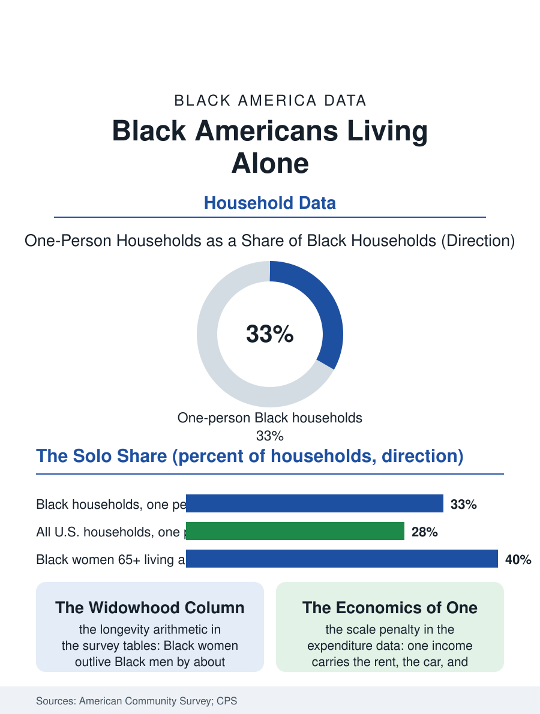

Black Census
One-Person Households: Black Americans Living Alone
A third of Black households now have one person in them, from young professionals to the widowed matriarch in the paid-off house. The solo file.

The fastest-growing Black household type in the census data has one person in it. Roughly a third of Black households are now one-person households, a share above the national figure and up from a small minority two generations ago, when the census counted solo living among Black Americans as a rarity. The rise spans every age: young professionals in the new downtowns, middle-aged adults between marriages, and the largest group of all, older Black women living alone in the homes where they raised families. This article reads the solo file.
Who Lives Alone, and When
The American Community Survey's household tables sort solo living by age with a clarity that overturns the lifestyle framing. Under thirty-five, solo households are a stage of the educated urban life the migration files describe, young Black workers in the one-bedroom apartments of Atlanta, Houston, and Charlotte, living alone at rates their parents' generation could not have afforded and largely did not choose. The middle years show the divorce and never-married arithmetic of the marriage file, adults between households, a group in which Black men figure prominently, often in the same neighborhoods as the children they co-parent from a separate address. After sixty-five the solo household changes gender and meaning: Black women outlive Black men by roughly five years in the life expectancy data, and widowhood converts the couple's home into a one-person household that can persist for decades. The oldest solo households are the poorest in the income data, Social Security-dependent, housing-rich and cash-poor in the paid-off homes of the homeownership file, and the most likely to be caring for grandchildren on visiting schedules that make the technical term one-person household a statistical fiction several afternoons a week.
The Economics of One
Solo living runs an economy of its own, and the data price it precisely. The one-person household forfeits every scale economy the census household shares: rent per person at its maximum, utilities undivided, the car, the insurance, the internet all carried on a single income. The poverty data reflect it: older Black women living alone record poverty rates among the highest of any household type in the survey, and the solo premium interacts with the gender pay file, since the one-income household is most often a woman's income. Against the arithmetic stand the assets: the solo homeowner builds equity the couple's household also builds, and the expenditure surveys show one-person households spending disproportionately on the things surveys associate with autonomy, personal care, dining, travel, gifts to the extended family network that the solo elder so often anchors financially. The pandemic stress-tested the arrangement in the public health data, where living alone predicted isolation's measurable harms, depression and delayed emergency care, alongside a resilience the qualitative research records: the solo householders with deep neighborhood and church ties, the kin-keeping web the family files describe, fared measurably better than the merely unaccompanied, suggesting the variable that matters is not the household's size but its connectedness.
Built for Households That No Longer Rule
The housing stock was not designed for this file. America's homes, and Black America's especially, were built for the mid-century family: three bedrooms, one wage, children in the yard. The solo third of the market squeezes into that stock inefficiently, the grandmother alone in the four-bedroom house she cannot sell without losing her neighborhood and cannot heat without strain, while young solo workers bid against each other for the small units the market rarely builds. Zoning codes in most cities still restrict the forms solo living wants: accessory apartments, subdivided houses, rooming arrangements that were the historic Black urban solution before mid-century codes outlawed them in the name of the family standard. The cities revisiting those codes are, knowingly or not, legislating for the solo file. The demographic projection is unambiguous: one-person households will keep growing as a share of Black households on every published forecast, driven by longevity, delayed marriage, and preference in roughly equal measure. The household file's closing point is definitional and important. The census counts an address, not a life. Behind the one-person statistic stand the densest kin networks in American data, and the solo house with the porch light on is frequently the headquarters of the whole extended family, the address where the holidays happen and the grandchildren cycle through. Living alone, in the Black American data, is very often what holding everyone else together looks like from the street.
More in Black Census
The Black Population of the United States: Size, Definitions, and Distribution
The Black population of the United States totals 52.8 million — 15.4 percent of the nation. How the Census Bureau defines and counts the population, and where it lives.
Black Median Household Income in the United States
Black median household income stands at $56,490 in the Census Bureau's annual income report — how the figure is measured, how it compares, and what drives it.
The Black Poverty Rate: Levels, Children, and the Long Trend
The official Black poverty rate is 17.1 percent — against 11.1 percent nationally and 7.7 percent for non-Hispanic White Americans. How poverty is measured and what the data show.
Source: U.S. Census Bureau, American Community Survey household composition tables; Current Population Survey living arrangements data.